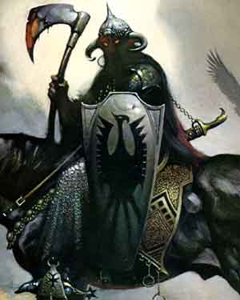

|
 |
Ambiente/Habitat | Qualsiasi |
| Frequenza | Rare | |
| Organizzazione | Solitary | |
| Periodo di Attività | Any | |
| Dieta | Nessuno | |
| Intelligenza | Average intelligence (8) | |
| Punti Combattimento | 21 Punti Combattimento | |
| Tesoro | Nessuno | |
| Allineamento Dominante | Lawful Evil | |
| Numero di Apparizione | 1 | |
| Classe Armatura | 1 [10 base, - 8 corazza, -1 scudo medio] | |
| Movimento | 6 esagoni | |
| Dadi Vita | 7 (56 punti ferita) | |
| Thac0 | 13 | |
| Numero di Attacchi | Ascia, due attacchi non simultanei al round | |
| Danni | 1d10+3 (taglio) * 2 | |
| Poteri Offensivi |
Lacerazione; Maestria Tattica; Istinto Predatorio; Infettare le Ferite [Anemia delle Battaglie]; |
|
| Poteri Difensivi | Immunità
dei Costruiti; [8] Punti Ferita per Dado Vita; |
|
| Poteri Generici | Nessuno | |
| Vulnerabilità | Nessuna | |
| Resistenza alla Magia | Nessuna | |
| Sensi | Vista Comune | |
| Dimensioni | Medium (1,80 m. larghi) | |
| Morale | Fearless (20) | |
| Valore in Punti Esperienza | 1602 |
| MODIFICATORI AI TIRI SALVEZZA | |||||||||||||||||||||||
| COR | 0 | 42 | ENV | 0 | 48 | MAG | 0 | 57 | MAL | 0 | 41 | MEN | 0 | 55 | RIF | 0 | 47 | ROB | 0 | 46 | VEL | 0 | 43 |
Descrizione
Il Cavaliere Nero è una terribile creatura apparsa nelle terre del Nordor. La prima di queste creature fu avvistata nel 30 p.n. inflictus a nord del Regno di Tarsis. Si tratta di un forte combattente che indossa una corazza scura ed è armato con una pesantissima ascia che altri guerrieri umani avrebbero utilizzato solo sfruttando la forza delle due mani. Oramai è chiaro che non si tratta di un essere vivente ma di un terribile costruito magico, all'interno del suo elmo, infatti, si vedono solo due occhi completamente rossi e così luminosi che risultano visibili anche in piena notte. Nelle poche volte che è stato sconfitto, i prodi avventurieri che sono stati capaci di una simile azione hanno assistito ad una scena unica, un forte sibilo e un gas verde che fuoriusciva dall'elmo del cavaliere maledetto e si disperdeva nell'aria lasciando a terra solo i pezzi di corazza vuoti al loro interno e la pesante ascia. Il Cavaliere Nero cavalca dei possenti destrieri neri che seppure non sono abili nel combattere sono stregati a tal punto da non temere alcuna ferita nel combattimento e non spaventabili ( ai fini delle statistiche si devono considerare Horse Riding ). Questi destrieri sono stregati in modo tale che solo un Cavaliere Nero possa cavalcarli altrimenti risultano totalmente privi di controllo e indomabili.
Combat
Il Cavaliere Nero combatte con una pesantissima ascia da guerra che ha le caratteristiche di una battle axe a due mani ( vedi regole per le armi ) con la differenza che il cavaliere la riesce ad utilizzare con una sola mano e usare lo scudo.
ISTINTO PREDATORIO (Moderate Special Ability): La creatura possiede un forte istinto predatorio, per tale motivo costei riceve un bonus costante di +1 ai suoi tiri per colpire.
MAESTRIA TATTICA (Moderate Special Ability): La creatura è particolarmente abile nel combattimento per questo motivo riceve permanentemente 9 punti combattimento supplementari.
LACERAZIONE (Moderate Special Ability): Gli attacchi di questa creatura sono in grado di lacerare il corpo dei loro avversari. Qualora questa creatura attacca una vittima colpendola con particolare precisione la stessa potrà lacerarne a fondo il suo corpo. Ciò avviene quando questa creatura colpisce una vittima effettuando un tiro per colpire naturale da 18 a 20. Quando ciò si verifica l'attacco provocherà il 1d8 danni supplementari. Tutti i danni saranno considerati danni da taglio e provenienti da un unico attacco (ad es. ai fini dei critici e dei danni alla corazza).
INFETTARE LE FERITE [ANEMIA DELLE BATTAGLIE] (Moderate Special Ability): Gli attacchi di questa creatura trasmettono il virus patogeno della malattia sotto specificata. In particolare i suoi attacchi costituendo l'esposizione diretta alla fonte del morbo impongono, ad ogni colpo andato a segno, di effettuare un tiro salvezza contro malattia (link).
Anemia delle Battaglie
Tipo di Contagio: Esposizione diretta alla fonte Tiro salvezza: Senza Modificatori
Incubazione:
Nessuna
Prima fase:
1d6 mesi = La
creatura diventa stranamente pallida e nonostante non subisca altre penalità non
rigenera punti ferita naturalmente (nemmeno con metodi naturali, ad es. con
prodotti erboristici). Solo le cure magiche avranno il loro effetto. Tiro salvezza:
Nessun Tiro Salvezza
Ultima fase: Guarigione
Immunizzazione: Un anno
Note: Nessuna
PARATA DI SCUDO SUPERIORE (Superior Special Ability): La creatura è particolarmente abile nell'uso dello scudo. Una volta al round, infatti, la stessa potrà provare a bloccare un qualsiasi attacco ricevuto in corpo a corpo da una posizione frontale che non sia di dimensioni superiori a large. L'utilizzo di questo potere non pregiudica il bonus conferito dallo scudo alla classe armatura della creatura. La creatura ha il 33% di riuscire a bloccare il colpo in arrivo. Questo tiro percentuale va effettuato prima del tiro per colpire effettuato dall'avversario. Se l'avversario effettua un 20 naturale sull'attacco che la creatura era riuscita a bloccare lo stesso andrà comunque a segno ma senza conseguenze critiche. Al tiro percentuale andranno applicate le penalità previste per il mantenimento della concentrazione in situazioni di combattimento particolari (come ad esempio incapacitato). La creatura non potrà provare a bloccare in alcun caso attacchi a distanza.
[8] PUNTI FERITA PER DADO VITA (Superior Special Ability): Questa creatura, invece che utilizzare il comune dado da otto, possiede un ammontare fisso di punti ferita che è pari a 8 punti ferita per ogni dado vita.
POTERI DEI COSTRUITI: In quanto creature costruite queste creature ottengono le seguenti caratteristiche dei costruiti (link).
Habitat/Society
Creati molto probabilmente dalla malvagia entità che si trova oggi nel Nordor, sono creature che servono la stessa combattendo per lei dove occorre. Si dice che questa entità demoniaca abbia accumulato tanta di quella energia (forse di tipo divino) per la distruzione dell'Impero del Nordor da avere il potere di creare tali potenti creature, assieme alle Ombre Incappucciate e alle Guardie Metalliche. Queste creature appaiono in tutto il territorio del Nordor quando si aprono i portali del male. Si tratta di portali magici che l'entità utilizza per inviare i suoi sicari ed emissari laddove occorre. Sembra che possano essere aperti in tutto il Nordor ma solo di notte, quando il disco solare non è più visibile. Questi portali si pensa conducano direttamente nella residenza dell'entità demoniaca ma potenti studiosi di magia affermano che il passaggio è mortale per cui solo questi costruiti possono passarli senza danni. Il rituale necessario per la creazione dei Cavalieri Neri è sconosciuto, nessun mago è mai riuscito a costruire una tale creatura. La corazza del cavaliere nero è considerabile una plate mail ma avendo al suo interno punte di ferro rivolte verso il corpo non può essere utilizzata. L'ascia è una normale battle axe a due mani senza alcun potere. Lo scudo è uno scudo medio che pesa il doppio del peso normale ma per tutto il resto è comune.
Ecology
I Cavalieri Neri non sono creature naturali e non contribuiscono in alcun modo all'ecologia del mondo di Arelia.